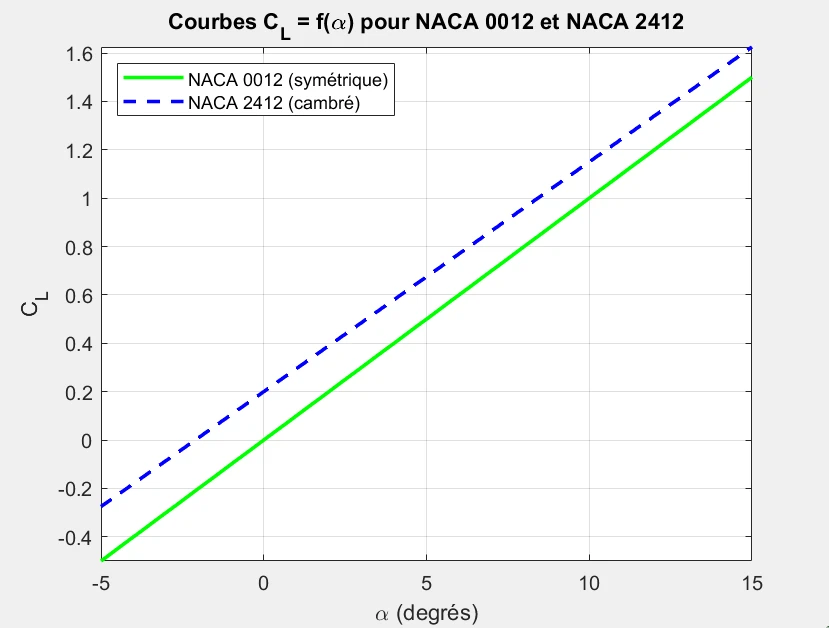

Academic · Thermal engineering
Shell-and-tube thermal sizing
Connecting heat duty, LMTD/NTU methods and pressure loss to exchanger geometry.
Explore project evidence ↓GitHub portfolio project material · Defining the thermal duty
- My role
- Thermal & hydraulic sizing
- Context
- Academic project
Thermal engineering - Deliverables
- Heat-duty calculations and an Excel sizing workbook
- Project stage
- Calculation study
THE ENGINEERING TASK
What needed
to be solved.
Heat-transfer requirements had to be considered alongside hydraulic losses and the exchanger geometry.
MY CONTRIBUTION
For this thermal-engineering project, I sized a shell-and-tube heat exchanger and built an Excel workbook to automate the calculations.
- 01
I calculated heat duty and used LMTD and NTU methods for thermal sizing.
- 02
I evaluated pressure drops and considered baffle pitch with reference to TEMA guidance.
- 03
I developed an Excel workbook to automate the sizing calculations.
THE WORK, UP CLOSE
Explore the evidence.
Open an image for its full view, caption and source. Project material and related context are labeled separately.
2 images
Defining the thermal duty
The hot-oil and cold-water streams from our sizing report, with their inlet and outlet temperatures and mass flow rates.
Source details
GitHub portfolio project material
exchanger-thermal-duty.webp
Iterating the calculation
An Excel calculation excerpt from the report, used to compare the assumed and calculated overall heat-transfer coefficients.
Source details
GitHub portfolio project material
exchanger-calculation.webp
THE OUTCOME
What the work
demonstrates.
A thermal and hydraulic sizing study, using TEMA as a design reference and an Excel workbook to iterate the calculations.
Project scope & evidence
TEMA is a design reference. The report excerpts do not establish certified equipment, experimental validation or completed fabrication.
Methods & tools
Heat-duty calculation / LMTD & NTU / Pressure drop / Excel
KEEP EXPLORING
Related work.
 Simulation
SimulationFuselage structural analysis
A fuselage-section design study connecting parametric geometry to static and modal FEA.

SimulationNACA airfoils in MATLAB
Comparing cambered NACA 2412 and symmetric NACA 0012 profiles across angle of attack.